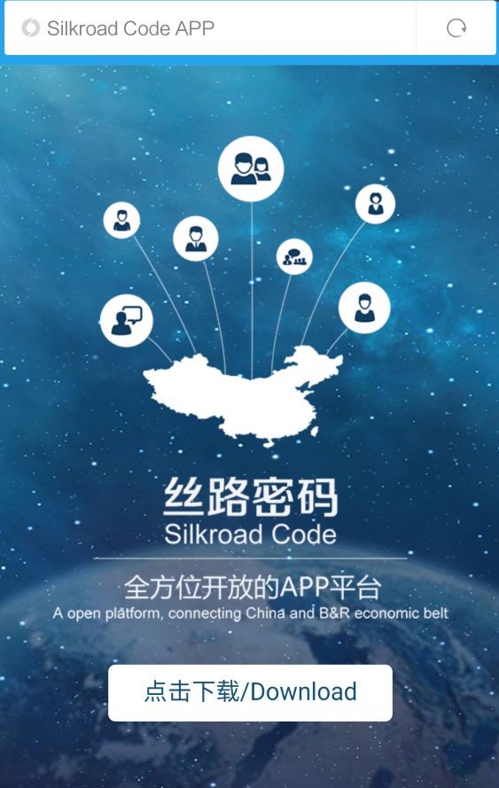
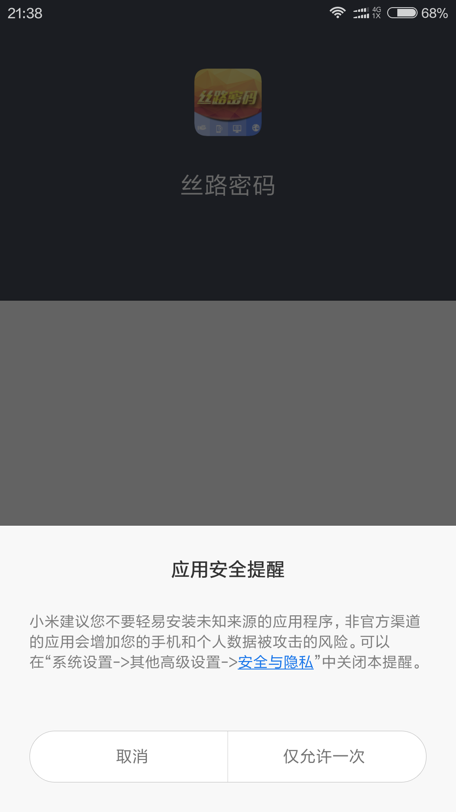
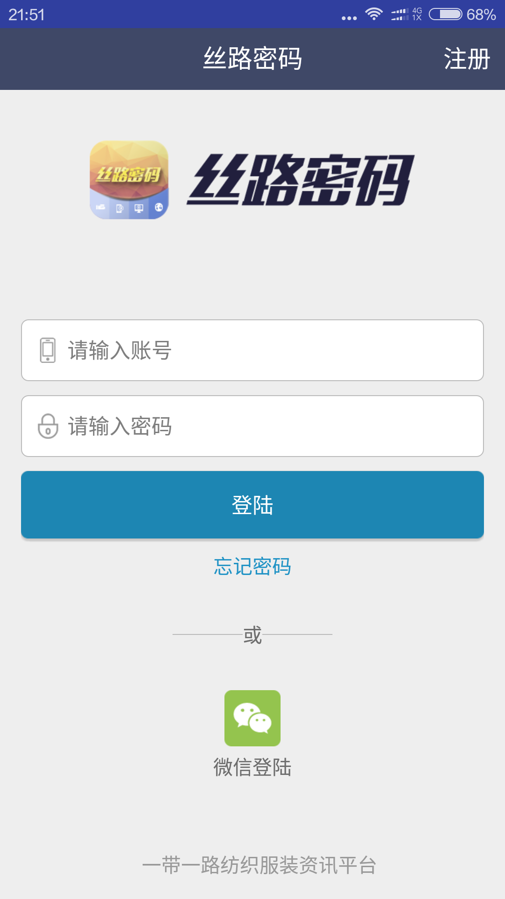
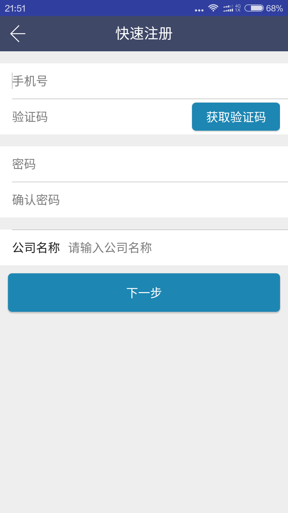
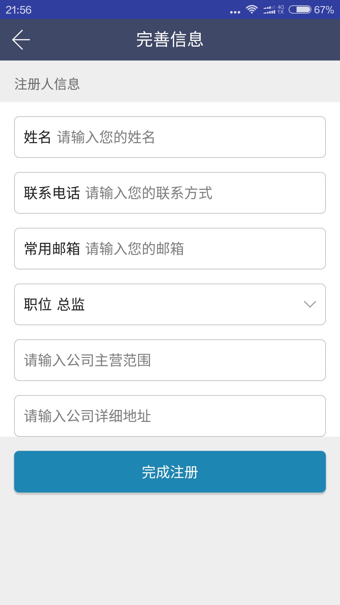
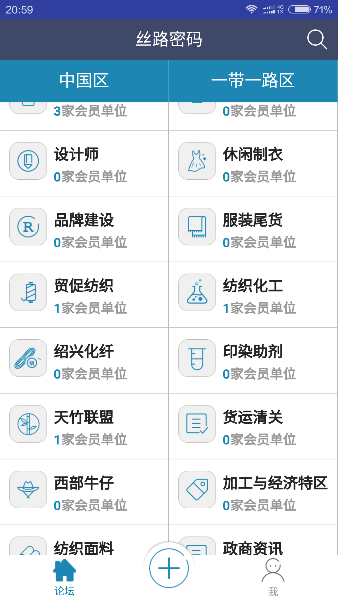

1、下载：
现在只支持安卓手机扫码下载，7月初，将会出现在各安卓市场中（如360市场等），直接搜索《丝路密码》即可下载，7月15日支持IOS版本。 A、用安卓的手机的扫描二维码功能（多半手机在相机APP或者浏览器APP里有这个功能） B、扫描后即显示：点击下载  C、安装：点击允许，继续安装。 2、注册：
A、推介使用微信登陆，微信登陆后只需要输入完善信息即可。或者点击右上角的《注册》进行注册，中文版需要中国区的手机号码认证注册，英文版的需要使用邮箱进行注册。  完善信息，所有项目均为必填项目，为了保证APP内企业信息的真实准确性。  3、如何使用：
 进入后，左边是中国区的各个板块，右边是一代一路区的各个板块，每个板块下面会显示各个板块所包含的企业数量。你选择进入的第一个板块将是免费的，（除开免费板块以外）并将你注册时候输入的企业信息自动添加到该板块的企业目录里。（请真实准确的选择你企业所在的行业）如果你的企业之前有人提前登陆在非你选择的板块，将不再显示到你所选择板块。而在第一次选择的板块中。（如有错误输入，请和你所在的板块的版主联系。）当你选择完第一个板块后，想查看其他非免费板块的类容，将按照不同板块进行收费。 在板块中你将拥有的权利：A、查看该板块所有会员单位的资料。B、在板块区发贴。4、如何分享会员单位信息
A、选择板块后自动登陆。B、在板块区发布新帖，与该板块的版主联系登陆会员单位信息。